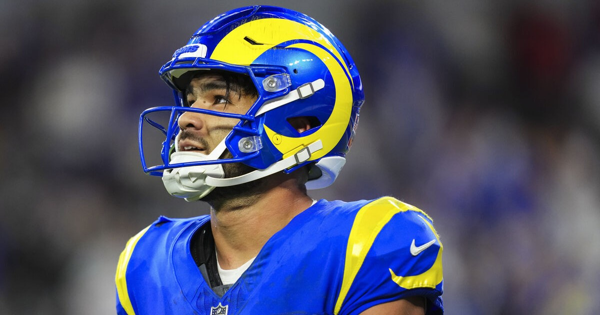

Puka Nacua is done for the season — four to five months, and no playoff return
ESPN's Adam Schefter reports Puka Nacua needs four to five months to recover from MCL surgery, closing the door on any playoff return and ending the Rams star's season — and maybe his time in Los Angeles.

Disclosure: this post contains affiliate links. I earn a commission on qualifying purchases.
The door Sean McVay left open on Friday is closed. Puka Nacua's recovery from MCL surgery will take four to five months, ESPN's Adam Schefter reported Saturday — a timeline that rules the Rams star out for the rest of the regular season and the playoffs, even if Los Angeles makes a Super Bowl run.
The timeline tripled in a day
On Friday, McVay said Nacua would miss "a couple of months" and would not completely rule out a postseason return. Saturday's report ends that possibility: the recovery runs into at least March, well past any playoff game the Rams could play. NFL Network's Ian Rapoport agrees, reporting that Nacua's timeline "does not match up" with a potential return for Super Bowl LXI.
McVay, for his part, sounded like a coach who saw this coming. "I thought when the initial injury occurred that this was more likely the direction that this would go," he said Friday. "This isn't anything necessarily new on our end."
The surgery
Three doctors recommended that Nacua undergo the operation, which was performed Tuesday by renowned orthopedic surgeon and Rams team physician Dr. Neal ElAttrache. The good news inside a brutal update: medical evaluations found no additional damage beyond the MCL, and Nacua is expected to make a full recovery in time for the 2027 season.
McVay acknowledged the decision was not just about salvaging this season but protecting Nacua's future. "There's a lot of thought and conversations that go into whether you're going to do that or not and what the best plan of action for return to performance for him is," McVay said. "Not exclusive to this year but for his career moving forward."
A brutal week, now complete
Nacua suffered MCL and PCL sprains, along with a turf toe injury, on the Rams' final offensive snap of their 20-13 win over the Washington Commanders on November 8. He was placed on injured reserve on November 12, and on Thursday the NFL suspended him three games for violating the personal conduct policy — a suspension he serves while on injured reserve, costing him no additional games but three game checks. The league was unaware Nacua had already undergone surgery when it imposed the suspension.
The season he was having
Nacua caught 70 passes on 93 targets for 715 yards and four touchdowns in seven games this season, adding 41 rushing yards and a rushing score. His final game before the injury was his best of the year: 14 catches for 150 yards and a touchdown in the win over Washington.
For his career, the fifth-round pick from the 2023 draft has 383 catches for 4,906 yards and 23 touchdowns in 51 games, with Pro Bowl selections in 2023 and 2025 and a first-team All-Pro nod last season.
Who's left to catch passes
The cupboard is bare. Davante Adams is still out with a hamstring injury and is not expected back until later in the season, and the Rams did not make a significant move before the trade deadline to bring in a receiver. That leaves CJ Daniels, who has one catch for 22 yards in four games this season, Tutu Atwell, Konata Mumpfield — 14 catches for 243 yards and a touchdown in 10 games, three of them starts — and Xavier Smith as the primary receiving options. Defensive tackle Poona Ford and kicker Blake Grupe are also out for the season.
The Rams sit at 6-4, two and a half games behind the 8-1 49ers in the NFC West, and they will play the stretch without their top receiver — and without a proven second option behind him.
The contract question
Nacua is in the final year of his rookie contract, on a base salary of $5.76 million after a performance escalator lifted it from its original $4.08 million, and he is set to become an unrestricted free agent in 2027. He will not be back to 100 percent before free agency starts, which complicates the payday that once looked automatic. A franchise tag — or a tag-and-trade for a cap-leveraged Rams team — is now very much on the table.
Gear up: Fanatics